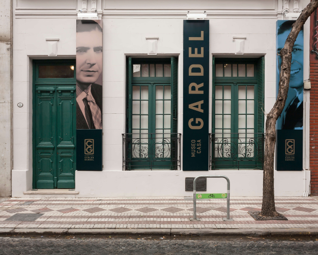

La casa del tango
Por: Tomás Aronna San Martín
Un recorrido por la casa de uno de los máximos exponentes del tango, Carlos Gardel, tras su reapertura.
Una fachada antigua y una imagen del mítico Carlos Gardel conforman la entrada de la que antaño fuera su casa y que, actualmente, alberga un museo en homenaje a uno de los mayores exponentes en la historia del tango y actor de Hollywood.
"En Toulouse, la ciudad de los trovadores, Marie-Berthe Gardès dio a luz a un niño al que llamó Charles Romuald Gardès, el 11 de diciembre de 1890, en el Hospice de Saint-Joseph de la Grave", puede leerse al ingresar a la primera sala, que recopila la vida del cantante, actor y compositor. En ella pueden verse algunos documentos viejos, como su certificado de estudios y una imagen de su partida de nacimiento; un tocadiscos antiguo y muchas fotos suyas y de su madre, entre otras imágenes, junto con carteles que cuentan su infancia, su llegada al país y su introducción al mundo de la música.
Hacia el interior, una gigantografía de Gardel con su compañero de dúo, José Razzano, se apodera de la sala. Junto a ésta, se halla una lista con las 893 canciones compuestas por el francés, desde su primera obra, “Sos mi tirador plateado”; hasta su última, “Guitarra mía”.
Al correr una cortina negra y entrar en una sala oscura, un video con los últimos momentos de la vida de Gardel se ven proyectados en la pared. “Carlos Gardel da un efusivo abrazo de despedida al señor Nicolás Díaz, gerente de Cine en Bogotá y sonriente ofrece volver: ‘No digo ¡Adiós! sino, hasta luego’”, manifiesta el film, seguido de una escena en la que el músico sube al avión que acabaría con su vida. En aquella oscuridad, frente a la proyección, se exhibe una fotocopia de su testamento, fechado el 7 de noviembre de 1933, en el que le deja todos sus bienes y propiedades a su madre y afirma que su nacimiento fue el 11 de diciembre en Toulouse, derrumbando todas las teorías acerca de su procedencia.
La siguiente sala presenta su historia cinematográfica. Pósters de algunas de sus películas, como “Flor de Durazno”, información de todas ellas e imágenes de algunas escenas ambientan el lugar. Al igual que en la habitación anterior, una proyección se refleja en la pared, presentando fragmentos de sus films.
Un largo pasillo lleva a la salida. Las paredes blancas se oscurecen con fotos del barrio por aquél entonces, seguido de frases del intérprete. “Se preguntarán ustedes por qué no resido en la Avenida Alvear, en el mejor chalet que se pueda hacer, pero les diré que vivo en este modesto barrio obrero porque es mi querido barrio, donde yo cuando purrete pasé momentos de felicidad que hoy, con todos los pesos que tengo en el banco, no puedo comprarme una hora de aquellas… Además quiero a este barrio mío porque es reo como el mismo tango…”, puede leerse camino a la puerta del museo.